背景
xlsx 是二进制，SVN 文本合并直接失效；而策划表恰恰改动最频繁、跨分支需求最强。
为什么不能用 SVN merge
- xlsx 是 zip，改一格整个字节流全变 → 只能报「整文件冲突」。
- 行号不是身份，ID 才是。同一条数据在两个分支行号不同，列序也会被随手拖动。
- 分支链长：
trunk → stable → publish，还有 bjs / pre / global 旁支。 - 误合一行数值 = 一次线上事故。
把 xlsx 还原成 「行 ID × 列 ID → 值」 的语义模型，在模型上做三路合并，再写回物理表格。字节层的 diff 全程不参与。
四个输入版本
| 角色 | 来源 | 用途 |
|---|---|---|
base | 源分支 r-1 | 算 diff 的基准 |
source | 源分支 r | 决定「哪里改了」 |
trunk | 源分支 HEAD | 决定「改成什么值」 |
stable | 目标分支 HEAD | 唯一被修改与保存的对象 |
base→source 定位改动，trunk HEAD 提供取值。
只有 trunk 上该行/列已不存在时，才退回用 source 兜底。
阅读路径
全文分两部分。Part I 是策划表自动合并引擎（本章起 13 章），Part II 是配套的 Excel Diff Ultra 差分工具（9 章，含 2 章 mth 技能图 diff）。两者没有代码依赖，可分开读。
- 只看合并算法 → I-05 ~ I-08
- 只看踩坑 → I-09（12 个 case）
- 只看告警长什么样 → I-10（示例集）
- 只看下一步做什么 → I-11（操作来源与数据来源分离）
- 只看差分工具 → Part II 全部
系统全景
两个 Python 大版本、四个进程、一套 Jenkins、一个 SVN 仓库。
| 子系统 | 运行时 | 职责 |
|---|---|---|
| POPO 监听器 | Py3 | 收指令、预检单号、下发确认/失败卡片 |
| 卡片回调 | Py3 | 按钮事件 → 幂等去重 → 逐类型触发 Jenkins |
| 分发器 | Py3 | 按文件冲突图把单号分配到空闲机器 |
| 合并引擎 | Py2.7 | 逐 revision 跑四阶段合并，产 ticket，提交 SVN |
| Stats | Py3 | 完成度校验、自动拖单、看板 |
调用链
DesignManager.try_diff_merge() # 单号 → revision 列表
└─ run_xlsx_diff_merge() # diff_merge_core.py
└─ for rev in revisions: # 逐 revision 重放
export base(r-1) / source(r)
merge_excel_workbook() # merge_interface.py
├ P-1 sheet 缺失同步 ├ P0 sheet 增删
└ for sheet: P1 前置 → P2 行 → 2.5 补漏 → P3 单元格 → P4 写入revision 是最小合并单元。
慢，但每一步 diff 都精确对应一次人类提交，可解释、可定位。
入口：POPO 监听器
用户不碰 Jenkins，也不碰 SVN，只在 POPO 里发一句话。
/发起merge 来源分支： trunk 目标分支： stable 单号列表： 11111, 22222
后缀：dev_skip（跳过预检） fake_user=xxx（代发）用户只给单号，合并类型由机器人自己认。
拉取单号下的全部提交文件 → path_classifier 按路径归类 → 得到该单号涉及的所有 merge 类型（策划表 / 动画 / 音效 / UI / 场景 / 代码 …）。
一个单号横跨多个类型时，确认卡上一次性列出，点一下同时发起全部类型，各类型走各自的 Jenkins job。
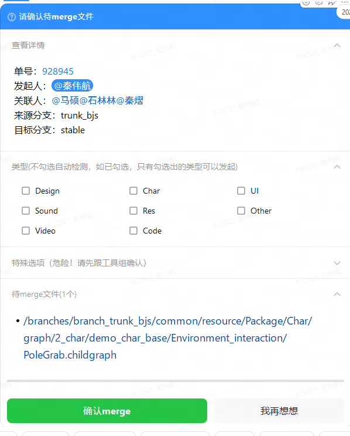
预检五步
任一步失败 → 失败卡片（按类型分组原因）；全通过 → 确认卡片。
三个非平凡问题
A预检慢，用户以为机器人挂了
- 解法
- 立即回一句「查询中…」（引用原消息，多人并发不串），真正工作丢进 daemon 线程。
B卡片超长被 POPO 拒收
- 解法
_split_refs_into_chunks()双硬限制贪心分片：单卡 ≤15 单号 且 文件列表 ≤6000 字符。文件列表预取复用，不重复请求 compass。
C预检失败的类型被 auto-detect 重新带上
- 根因
- 卡片只传单号不传「允许哪些类型」，回调侧只能重新自动检测。
- 解法
- 按
frozenset(passed_types)聚类发卡，部分失败的簇显式带option_type，回调侧据此过滤。
代码：handlers/command_initiate_merge.py、parsers/initiate_merge_parser.py
卡片回调服务
要在 POPO 苛刻的超时窗口内返回，还要保证手抖点两下不会 merge 两次。
| actionType | 行为 |
|---|---|
ACTION_CONFIRM | 幂等 → type→refs → 分支流向校验 → 逐类型触发 → 进度回写 |
ACTION_CANCEL | 卡片置「已取消」，折叠详情 |
ACTION_MUTE | 从提醒队列删除该 ref |
ACTION_REVIEW | warn 卡确认 → 回写 Stats 已读状态 |
D重复点击触发两次 merge
- 解法
- 以
instanceUuid做 TTL 60s 幂等锁。没抢到锁不报错，返回和首次一样的卡片态，用户无感。
E回调超时，卡片卡在旧状态
- 解法
- 响应与执行分离：先秒回「发起中…」，daemon 线程每完成一个类型就 PUT 回写
callback_percent，全部完成写终态，失败额外发私聊。
F分支拼错，跑到 Jenkins 才失败
- 解法
- 触发前查
is_valid_merge_flow()，读的是和合并引擎同一份DEFAULT_TYPE_DCT。不合法直接改卡片文案，零 Jenkins 请求。
失败提醒指数退避重发，三种情况清除：用户 mute / 该 ref 被成功触发 / 部分成功时只清成功类型。
代码：card_callback_server/app/handlers.py、utils/idempotency.py
确认闭环与待办提醒
合并跑完只是一半。有人真的去看了那份 diff，才算完。
点一下，闭环就成了
卡片就地变样，不再发一条新消息。点过的和没点的，扫一眼聊天窗口就分得清。
回调返回的 DATA_UPDATE 同时把两个折叠面板收起来 —— 已经看完的东西不用再占屏幕。
没点的，每天提醒两次
10:30 和 16:35，各扫一遍 reports 表。
| 这条过滤挡掉什么 | 理由 |
|---|---|
| 不在最近 1 小时内 | 刚合完就催，人还没走到工位 |
| 只看两周内 | 再老的单子已经失去确认价值，纠缠只剩噪音 |
| 发起人是纯数字 | 群号，群里没有「指派人」这个概念 |
指派人已在 confirmed | 确认按人记，同一单别人确认过不算他确认过 |
收件人取的是 Redmine 指派人，不是发起人。发起人往往是工具组的人，真正该看数据的是策划本人。
!一张卡装多个单号，uuid 没地方放了
- 起因
- 提醒卡按人聚合，一张卡里可能有十几个单号。可
review_uuid是卡片级变量，只有一个坑位。 - 做法
review_uuid传空串，把 uuid 塞进每一行文本：单号:123456, 时间:…, uuid:826ede65-…。哪一行被点，就带哪一行的内容回来。- 代价
- 回调侧要同时认两种格式：老卡片传纯 UUID，新卡片传整行文本。
_extract_review_uuid()用 8-4-4-4-12 正则从里面抠，抠不到就原样透传让下游报错。
warn_content 超 6000 字节会被 POPO 拒收。按行累加，超了就停在上一行，剩下的留到下一个时间点 ——
反正一天有两次机会。卡片的 instanceUuid 每次新生成，不与任何 report uuid 绑定。
提醒卡是一次性广播，不需要像 warn 卡那样保持同一实例的连续性。
代码：manager_design/stats_client.py（上报）·excel_merge/card_api.py（发卡）·
card_callback_server/app/handlers.py _handle_action_review·stats/reminder_scheduler.py（每日扫描）
分发与统计
多机并行会互相踩 SVN 工作副本。分发器解决「谁跑什么」。
committed_files，文件集合有交集的 ref 不允许同时在跑。三态本身是结果。真正的问题是：每一轮该从队列里捞哪几个出来跑。
冲突图：每轮求一个极大独立集
节点 = 一个待合并单号，边 = 两者的 committed_files 有交集。
「一批能并行跑的单号」= 这张图上两两无边的一组点。
三个实现要点
| 要点 | 做法 |
|---|---|
| 不建邻接矩阵 | _build_file_to_refs() 建 file → ref_ids 反向索引，查邻居时只遍历自己那几个文件。两两求交是 O(n²) 次集合运算，反向索引摊到 O(总文件数) |
| 贪心的排序键 | (queued 优先, 冲突度↑, 文件数↑, 到达序)。先放冲突度低的，同一轮能塞进更多互不相交的 ref；queued 提到最前是防饿死 |
| 依赖回填 | 被挡下的 ref 记 dependencies = 冲突邻居 ∩ (assigned ∪ 本轮已选)。看板上能直接答「我在等谁」 |
依赖边也天然无环：只允许新 ref 依赖已有 ref，已有 ref 的
dependencies 从不回写。选中后 least_loaded_job() 按 assigned 中各 job 的当前计数取最低，同计数时保持 jobs 原顺序 —— 让分配结果可复现。
G内存与磁盘漂移，单号永久卡死
- 症状
- 写完 assign 后 commit 失败被 revert：磁盘仍是 unassigned，内存已记 assigned → 既不重分配也不会完成。
- 解法
- ① 启动时 bootstrap 重建内存态；② 定时
_reconcile_assigned_with_disk()以磁盘为准校正。无法识别的值只告警不动内存。
对账循环：机器健康 + 内存/磁盘一致性
每 30 分钟一次对账 tick，把两样容易漂移的东西押回现实：机器的在线状态，和磁盘上的 ref 文件。
三个落地要点
| 要点 | 做法 |
|---|---|
| job → 物理机 IP | jenkins-ci 的 config.json 以 svn extern 挂进 stats/，node 字段取 "_" 前段；文件缺失直接跳过健康检查，调度不受影响 |
| 在线判定 | 系统 ping，输出含 TTL= 才算在线 —— Windows 上「不可达」也可能 returncode 0 |
| 告警节奏 | 离线、分支全挂各发一次 POPO（fully_blocked 去重）；恢复只记日志不打扰 |
完成度闭环
一个单号跨多类型异步完成。Stats 维护 ref_status，每类型一列。
notified=1，再发通知——宁可漏发不重发。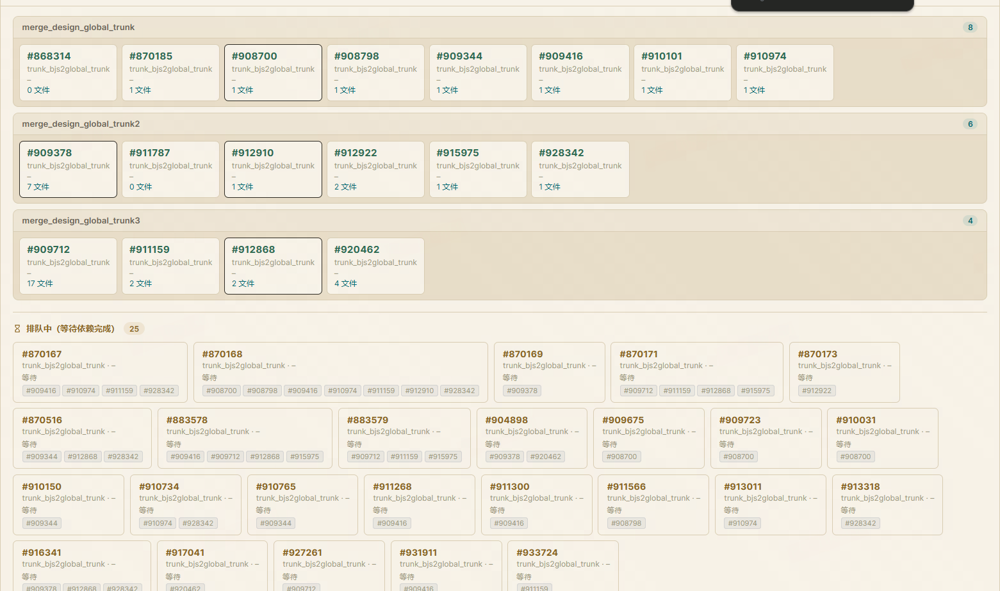
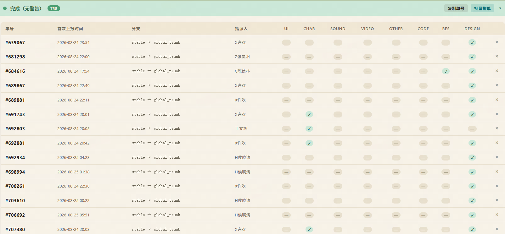
代码：stats/distributer/scheduler.py、stats/distributer/machine_health.py、stats/completion_checker.py
out-of-date 与降级提交
冲突图管的是事前排开。真撞上了，是另一码事。
分发器只保证本批次内部互不相交。分支上还有策划、还有别的工具、还有别的 merge 类型 —— 这些人分发器管不着。
svn commit 报 E155011 / E160028 → 整个目录 revert，本次全部作废。
一次提交动辄几十个文件，别人只动了其中一张表，算好的几十个文件跟着一起白扔。怎么算 out-of-date
svn st -qu
M * 12345 道具表.xlsx ← 本地改了 + 服务端更新了 = 真冲突
* 12345 技能表.xlsx ← 本地没改，不影响 commit判据是第 8 列为 * 且第 0 列非空。少了后半个条件，会把一大片「本地没动过」的文件误判成冲突，
降级直接退化成全量回滚。
三处配套，少一处都出事
| 位置 | 少了会怎样 |
|---|---|
real_run_merge有 OOD 就跳过 clear_info | ref 被清出队列，那几个文件再也不会重试 |
processNeedSetRefsToOkOOD 非空则不自动拖单 | 活没干完，单子已经被拖到「已完成」 |
ref_log / SUCCESS_PROCESS_FILE剔除被 revert 的文件 | 数据永久丢失，且全程无报错 —— 见下 |
!被 revert 的文件，被远端记成了「已合并」
- 症状
- 某张表的改动怎么都合不过去。重跑、重建单都没用，日志里一条报错都没有。
- 根因
_real_process_out_list在每个文件操作成功的当下就写ref_log，而 revert 发生在这之后。create_ref_log照着ref_log把这些文件 insert 到远端「已合并」服务 → 下次重试时它们被判定为已合并，直接 skip。- 解法
- 降级成功后、
return之前，按相对路径把 OOD 文件从ref_log与SUCCESS_PROCESS_FILE里删干净。 用独立内层try包住：清理失败也照常返回，避免被外层except吞掉。
另一种策略：灰度合并直接中止
| Design 主流程 | 灰度合并 | |
|---|---|---|
| 一次提交 | 几十个文件 | 单个文件 |
| 撞 OOD | 降级，保住其余 | 中止整个 run |
| ref 去向 | 都留在队列，等下次 Jenkins | |
单文件场景没有「保住大部分」可言，中止反而更简单可靠。同一个问题，规模不同，最优解就不同。
从源头少撞车
branch_trunk_bjs/design/1System 实际指向 trunk/design/1System），
导致基类采集的 modify_files 恒为空，按文件冲突分配的逻辑整个失效。改法：跳过逐 ref 分配，在 _on_batch_add_complete 里把同批次 ref 统一按负载均衡分到同一台机器。
同机串行执行，天然不会自己跟自己抢。
代码：design_manager.py commit_dir_add_info L1026 · svn_util.py get_out_of_date_files L709
数据模型
所有决策发生在语义模型上，不在 openpyxl 坐标上。
两种表头格式
| 格式 A（3 行） | 格式 B（4 行） | |
|---|---|---|
| 第 1 行 | 中文表头 | 备注（不参与合并） |
| 第 2 行 | 英文表头 ID | 中文表头 |
| 第 3 行 | 类型 | 英文表头 ID |
| 第 4 行 | 数据起始 | 类型 |
| 第 5 行 | — | 数据起始 |
按类型行位置判定（首列为 id 列，类型一般是 str/int）。
行 ID = 复合身份
row_id = id @_@ branch_mark @_@ skip [ @_@ extra... ]
id 第一列的值
branch_mark 列不存在时默认 "trunk"
skip 列不存在时默认 "1"
extra id_rules.json 针对特定 sheet 配置的额外 key 列有些表靠 id + 业务维度才唯一；不纳入行 ID 就会直接触发行 ID 查重失败。
ID 列表头缺失的四象限
| trunk | stable | 处理 |
|---|---|---|
| 有 | 有 | 正常 |
| 有 | 无 | 前置操作 2 先同步列，再走正常规则 |
| 无 | 有 | 非 ID 单元格修改不写入，新增行 ID 照常写 |
| 无 | 无 | 都取默认值 |
列 ID
= 英文表头，统一小写作 key，original_key 保留原写法。
不归一化则 ItemId 与 itemid 会被当两列，撑出重复列；写回时又必须用原写法，否则导表脚本找不到列。
header.col_idx 不一定是物理列号——插列时可能是 7.5 这样的浮点排序值。
所有写入必须 find_phys_col() 按列名重新物理查找。流程概览
一次合并 = 把 r-1 → r 的改动落到 stable。四个版本进，一个文件出。
为什么把行列与单元格拆开
每个阶段的出口立一条假设，下一阶段就建立在这条假设之上。
| 阶段 | 只负责 | 因此下一阶段不必再操心 |
|---|---|---|
| P1 | 列的集合 | P2/P3 不再判断「这一列该不该建」 |
| P2 | 行的集合 | P3 不再判断「这一行该不该建」 |
| P3 | 格子里的值 | 四条规则只需回答一个问题：取谁的值 |
耦合在一起写过一版：单元格规则里既要判断行在不在、又要顺手建行建列，边界情况呈组合爆炸。 拆开后 P3 的规则表从十几条塌缩成四条。
贯穿全程的指导原则
这条原则贯穿前置操作 2（同步表头取 trunk）、前置操作 4（类型修复取 trunk）、单元格规则 (1)（主路径取 trunk）。
它真正在防的东西：无序合并
单号是并发提交、乱序合并的。r5 的单号可能比 r9 晚一周才轮到合并。
X，r7 又新建了一行 ID 同为 X 的数据。
此刻才去合并 r5 的那条删除 —— 删掉的是后来那一行，一条无辜的新数据凭空消失。X，r9 删除行 X。先合 r9：stable 上压根没有 X，删除空转。
事后再合 r5：X 被加进 stable，而再也没有第二次删除来抵消它 —— 一行早该消失的数据永久留了下来。落到规则上
| 本次操作 | trunk 最新 | stable | 动作 |
|---|---|---|---|
| 删除行 X | 还有 X | 有 X | 不删，建单转人工 —— trunk 都还留着，说明后来又加回来了 |
| 已无 X | 有 X | 执行删除 —— 终态确实没有它 | |
| 新增行 X | 已无 X | 无 X | 不加，建单 —— 加进去就成了永久孤儿 |
代价是把判断不了的情况交给人。宁可漏合，不可错合：漏了有人补，错了要翻整张表。
规格：manager_design/GUIDE_EXCEL.md 实现：excel_merge/diff_merge_core.py
前置操作
对齐表结构。这条流水线的顺序本身就是设计。
三条假设 = 三个守门检查
| 假设 | 被破坏时 | |
|---|---|---|
| 假设 1 | 英文表头 ID 唯一 | 列映射不确定 → high 单 + 跳过该表 |
| 假设 2 | 行 ID 唯一 | 行判定不确定 → high 单 + 跳过该表 |
| 假设 3 | 行身份稳定，不改 ID | 等价于「删一行 + 加一行」，目前无运行时防护 |
跳过是表级不是文件级 —— 一张表有问题不该拖垮整个文件几十张表。
几条关键规则
- 插新列位置：在 trunk 列序里向左找到第一个 stable 也有的列作锚点，插其右侧；找不到则插表尾。同步复制表头样式。
- ID 组成列不参与单元格同步（
branch_mark/skip/extra key）——它们定义身份，不是数据。 - 重命名双条件：stable 上 A 存在 且 B 不存在或整列为空。否则退化为建单转人工。
- 类型修复不立刻写盘，作为
type_repair_changes传给 P3，按(row_id, col_id)去重后统一写。
代码：sheet_ops.py run_sheet_pre_ops L1313
行增删与步骤 2.5
base→source 决定「想做什么」，trunk / stable 现状决定「做不做」。
行删除（base 有 / source 无）
| 场景 | trunk | stable | 动作 |
|---|---|---|---|
| 1.1 | 无 | 无 | 已是目标态，不处理 muted |
| 1.2 | 无 | 有 | 执行删除（唯一真正删的场景） |
| 1.3 | 有 | 无 | 不处理 |
| 1.4 | 有 | 有 | 删了又加回，不删 |
删除以 trunk 最新为准，不以 source 为准。
行新增（base 无 / source 有）
| 场景 | trunk | stable | 动作 |
|---|---|---|---|
| 2.1 | 有 | 无 | 从 trunk 取整行添加 |
| 2.2 | 有 | 有 | 转 P3 做单元格合并 |
| 2.3 | 无 | 有 | 异常 → high 单转人工 |
| 2.4 | 无 | 无 | 加了又删，不处理 muted |
外放版本拦截
目标分支在白名单 ∧ sheet 有 cn_release_version 列 ∧ 类型为 date_timestamp 时生效。
行日期 > 当前测试版本日期 → 拦截，记入 blocked_row_ids。
步骤 2.5：补漏
P2 只看本次 diff，漏掉「trunk 有 / stable 无 / 非本次新增」的历史遗漏行。2.5 遍历 trunk 行补齐。
process_step_2_5(trunk_sd, stable_sd, exclude_row_ids, ...)
→ (extra_rows_added, extra_changes, tickets, skipped_row_ids, blocked_infos)exclude_row_ids 最初只传 added_row_ids，导致被 guard 拦截的行在 2.5 被当新候选重判一遍，产生重复明细。详见 Case 03。代码：row_ops.py、release_version_guard.py
单元格四规则
最细粒度：变了的每一格，写不写、写什么。
| 规则 | 行 | 列 | 写入值 |
|---|---|---|---|
(1) | trunk ✓ stable ✓ | trunk ✓ stable ✓ | trunk 最新 主路径 |
(2) | stable ✗ | — | 不写，建 muted 单 |
(3) | trunk ✗ stable ✓ | stable ✓ | source(r) trunk 已删该行 |
(3-skip) | trunk ✗ stable ✓ | stable ✗ | 不写，无处落笔 |
(4.2) | trunk ✓ stable ✓ | trunk ✗ stable ✓ | source(r) trunk 已删该列 |
(4.3) | trunk ✓ stable ✓ | trunk ✗ stable ✗ | 不写 |
run_cell_merge 收尾三件事
- 合并
extra_changes：同 key 直接替换，追加会累积旧值。 - 过滤
skipped_row_ids：2.5 跳过的行不再产生变更。 - 注入
type_repair_changes，按(row_id, col_id)去重。
_fallback_add_header 说明有边界情况没覆盖。就地补列 + 打日志留痕，好过丢数据或抛异常。12 个真实 case
全部线上发生、已定位、已修复。格式：症状 → 根因 → 解法。
01重复列越合越多
- 症状
- 某列在 stable 上有两份，每跑一次 merge 就多一份，表宽度暴涨。
- 根因
- 读表遇到重复列 ID 时只保留第一个，其余从内存模型丢弃。于是前置操作 2 看到「trunk 有 / stable 无」，又物理插一列。更糟的是
check_header_duplicates做完清理会清空标记，信息就此丢失。 - 解法
- 拆两步：0.9 在任何 check 之前收集四版本并集；1.9 用并集对四个版本同时物理移除。只清 stable 没用——trunk 还有重复，下轮 diff 又当新列。
# 前置操作 0.9: 收集四版本重复列（在任何清理前）
for _sd in (trunk_sd, stable_sd, source_sd, base_sd):
if _sd is not None and getattr(_sd, u'duplicate_col_ids', None):
_saved_dup_col_keys.update(_sd.duplicate_col_ids)02cell_rule_2 大面积误报
- 症状
- 几十条「stable 无该行」ticket，但这些行在 trunk 上也不存在。
- 根因
- 场景 2.4 的行被判「不处理」，却仍留在
added_row_ids。P3 对新增行的逻辑是「每个非空格都算变更」→ 幽灵行的每一格都命中规则 (2)。 - 解法
- 行操作末尾用执行后的 stable 行集合过滤：没真正进 stable 的行不许进 P3。
_stable_row_set = set(stable_sd.row_ids)
result.added_row_ids = [rid for rid in added_row_ids if rid in _stable_row_set]03拦截明细重复两遍
- 根因
- Case 02 修复的连锁反应。被 guard 拦截的行没进 stable，于是被上面那条过滤剔除；2.5 的排除集只有
added_row_ids，就把它们当新候选重判了一遍。 - 解法
- 排除集改为
added_row_ids ∪ blocked_row_ids。「已处理过」与「已写入」是两个概念。
04stable 缺整张 sheet → 全表误报
- 根因
- 前置操作 0 只看 base→source 新增的 sheet。历史遗漏的 sheet 在 base/source 都有，被认为「无事发生」，然后每一行都命中规则 (2)。
- 解法
- 新增前置操作 -1：本次确有改动才整表同步，并跳过本 revision 的后续合并（同步后已完全一致，再合只会产噪音），同时刷新内存模型。
052.5 跳过的行仍产生变更
- 解法
- 2.5 返回值扩展出
skipped_row_ids，run_cell_merge先过滤再套规则；extra_changes按 key 替换不追加。
06类型变更写出脏数据
- 症状
str→int后 stable 残留大量非数字值，导表报错。- 根因
- 只改类型行不管数据行。类型变更本质是一次数据迁移。
- 解法
- 端点校验（trunk 确实是新类型）→ 全列扫描（不只本次涉及的行）→ 行级修复（从 trunk 取值，取不到就建单）。
07数据写到隔壁列
- 根因
col_idx是逻辑排序值（可能是7.5），被直接当 openpyxl 列号用了。- 解法
- 硬规矩：写入前必须
find_phys_col()按列名物理查找，col_idx只许用于排序比较。
08进程静默卡死
- 根因
- openpyxl 处理超大表时
insert_cols的样式重算退化到近似死循环。不是死锁，但日志上分不出来。 - 解法
MergeDebugProbe：主流程打beat()心跳，180s 无心跳就用faulthandlerdump 所有线程栈。
09单次失败污染工作副本
- 解法
- 两道闸：
critical_failure置位后短路所有剩余 revision；立即svn revert恢复目标文件。
for rev, modify_type in revisions:
if critical_failure: break
...
except Exception:
critical_failure = True
svn_util.run_command2(u'svn revert "{}"'.format(target_local_path))10Ticket 洪水淹没真问题
- 解法
- 四层降噪 →
(sheet, category) 跨 revision 只留一条high_tickets = False 无条件关闭了 Redmine 建单，只走 POPO。
这是观察期的有意短路，待误报收敛后恢复。11revision 归属不明，guard 取错版本
- 根因
- revision 列表是多单号汇总的，guard 却要按 ref 粒度查版本日期，只能取第一个 ref 兜底 → 张冠李戴。
- 解法
- 构建
rev_to_ref反向映射随上下文传入；guard 内按 ref 缓存，一个 ref 只查一次。
12同一 revision 重复重放
- 根因
- 一个 revision 可能被多个关联单号各带进来一次。
- 解法
_remove_dep_revs()保序去重（顺序不能乱，revision 之间有先后依赖）；IGNORE_REVISIONS提供永久黑名单。
告警示例集
非平凡告警逐个举例：四版本对照 → 结果 → 实际推送文案。
平凡告警（一句话足够，不举例）：表头删除、Sheet 删除 —— 我们从不执行删除，只建单；
ROW_DEL_1_1、ROW_ADD_2_4 —— 目标态已一致，纯存档。
| 版本 | id=1001 | name | price |
|---|---|---|---|
| base r-1 | 不存在 | — | — |
| source r | 1001 | 火焰剑 | 500 |
| trunk HEAD | 已被删除 | — | — |
| stable HEAD | 1001 | 火焰剑 | 480 |
r 加了这行，之后 trunk 又删掉；但 stable 上不知何时已经有了它，且值还不一样。 机器无法判断该删该留 —— 删可能丢线上数据，留可能是脏数据。
| 版本 | id=2007 | hp | atk |
|---|---|---|---|
| base r-1 | 2007 | 100 | 20 |
| source r | 2007 | 150 | 20 |
| trunk HEAD | 2007 | 150 | 20 |
| stable HEAD | 不存在 | — | — |
改的是 hp，但 stable 分支根本没有 2007 这条数据（可能整块内容尚未开放）。
同 sheet 的所有此类行聚合成一条，最多展示 20 行。muted → 只进群不打扰个人。
added_row_ids，每一格都被判为变更。| 版本 | id | cn_release_version | 说明 |
|---|---|---|---|
| trunk HEAD | 3001 | 2026-09-15 | 待拦截 |
| trunk HEAD | 3002 | 2026-07-01 | 放行 |
| stable HEAD | 都不存在 | — | — |
| 当前测试版本 | 2026-08-01 | ||
3001 的外放日期晚于当前测试版本 → 不能进 stable；3002 早于 → 正常合入。
blocked_row_ids，3002 正常新增。| 版本 | 列 level 类型 | id=4001 | id=4002 |
|---|---|---|---|
| base r-1 | str | "5" | "高级" |
| source r | int | 5 | 9 |
| trunk HEAD | int | 5 | 该行已删 |
| stable HEAD | str | "5" | "高级" |
4001 的 "5" 能安全转 int，且 trunk 有值 → 自动修复为 5。
4002 的 "高级" 无法转 int，而 trunk 上该行已被删 → 无处取值，只能转人工。
| 版本 | 英文表头行 | |||
|---|---|---|---|---|
| base r-1 | id | atk | def | — |
| source r | id | attack | def | — |
| stable HEAD | id | atk | def | attack（已有数据） |
看起来是 atk → attack，但 stable 上 attack 已经存在且有数据。
若按重命名处理，atk 的值会覆盖掉真实的 attack 列。
自动改名的双条件：stable 有 A 且 B 不存在或整列为空。
| stable 行 | id | branch_mark | skip | 行 ID |
|---|---|---|---|---|
| 第 12 行 | 5001 | trunk | 1 | 5001@_@trunk@_@1 |
| 第 47 行 | 5001 | trunk | 1 | 5001@_@trunk@_@1 |
两行算出同一个身份 → 「改哪一行」「取哪一行的值」全部失去确定性。整套算法的假设 2 被破坏。
| 版本 | Sheet 列表 |
|---|---|
| base r-1 | equip, monster |
| source r | equip, monster, newshop |
| trunk HEAD | equip, monster（newshop 已被删） |
| stable HEAD | equip, monster |
新增 sheet 的取值来源是 trunk 最新；trunk 上已经没有了，就无从拷贝。
critical_failure → 跳过该文件剩余全部 revision → svn revert 目标文件。目标是不在半损坏的文件上继续合并。宁可这次什么都不做，也不能提交一个内容错乱的表。
严重度分流
| 投递 | 典型类型 | |
|---|---|---|
| high | Redmine 工单 + POPO 卡片 | ROW_ADD_2_3 COL_RENAME_* TYPE_CHANGE_* MERGE_EXCEPTION SHEET_ADD_NO_TRUNK |
| low | 仅 POPO 卡片 | ROW_ADD_BLOCKED_RELEASE |
| muted | 仅群 POPO，不进 warn 卡 | CELL_RULE_2 ROW_DEL_1_1 ROW_ADD_2_4 |
通知对象 = Redmine 指派人 + 创建人 + 关注者 + 本次发起人，兜底加固定群。
report_tickets_via_popo() 刻意与 issue_api.report_tickets() 同签名，切渠道只换函数引用。
推送到 POPO 之后长这样
上面的纯文本，落到卡片上是这个样子。
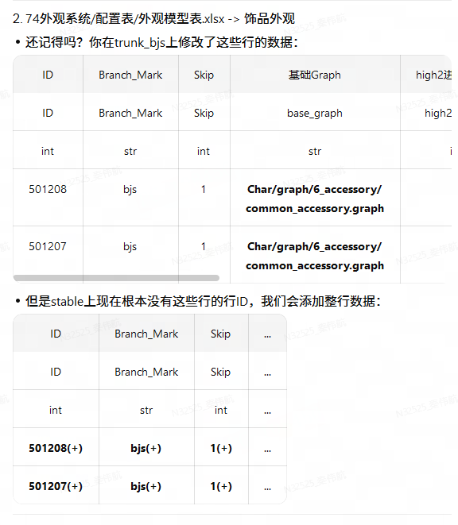
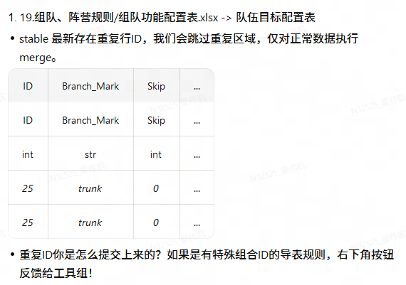
两张卡各有一处刻意设计。2.5 上下两张表连着放，让人一眼看清「你动了 3 个格」和「我们塞进去 12 列」之间的落差。
重复 ID 把同一条数据渲染两遍并加 * 装饰 —— 只列一次的话，读的人会以为工具在虚报。
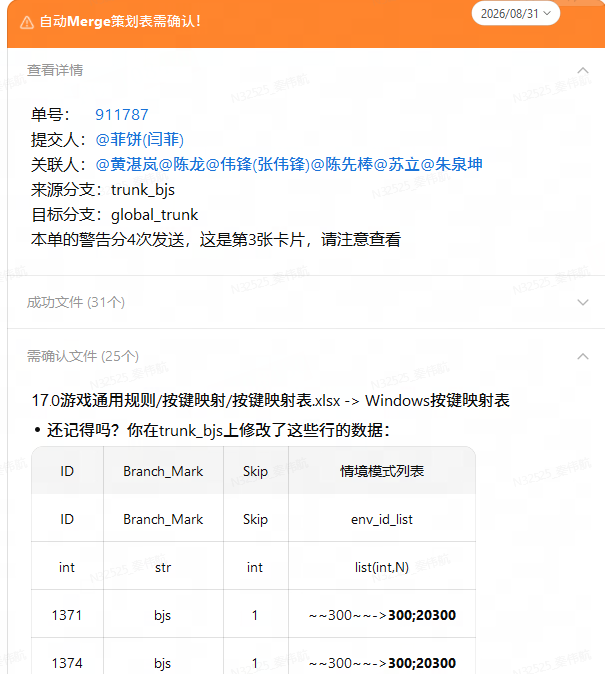
后两张对应 I-04 确认闭环与待办提醒。
看不懂？右下角一键找人
警告正文里反复出现一句话：「右下角按钮反馈给工具组」。那个按钮就挂在每张 warn 卡上。
点下去直接拉起与负责人的 POPO 会话，消息体已经填好，发送即可。
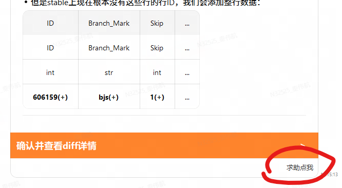
正文由 _build_ask_help_msg() 现拼：固定开场白 + 单号 + 来源分支 + 目标分支 + diff 链接。
策划省掉了「哪个单、哪条分支、哪张表」这三轮来回。
收件人取 ask_help_target，默认指向当前负责人，发卡时可覆盖。
会话由 POPO 卡片自己拉起，服务端的 ASK_HELP 分支只落一条日志。少一次转发，就少一个会挂的环节。
未来方向：操作来源与数据来源分离
往 publish 合并时，源分支该选 stable 还是 bjs —— 这个问题目前没有正确答案。
现状：一个 source 身兼两职
| 职责 | 当前取自 | 要求 |
|---|---|---|
| 操作（哪里改了） | base r-1 → source r | 要贴近开发者的原始意图 |
| 数据（改成什么值） | 同一分支的 HEAD | 要是已经过测试验证的值 |
两个职责绑在同一个分支上，而它们想要的分支并不是同一个。
取哪个分支都会输
- 操作序列被漏合改写过
- 表结构与 bjs 已分叉
- 数值经过测试验证
- 操作序列 = 开发者原意
- 数值未经测试
方案：拆开取
例子
单号 #33012 在 bjs 上把 hp 从 100 改到 150，并新增一列 quality。stable 因为一次漏合，quality 列压根不存在，hp 则被测试同学回调到 120。现在要合进 publish。
| 来源 | 操作 | 取值 | 写进 publish |
|---|---|---|---|
| 当前做法（source = stable） | stable 上无 quality 的新增记录 → 整列丢失 | 120 | 只改了 hp |
| 当前做法（source = bjs） | 加列 quality + 改 hp | 150（未测） | 把未测数值带进 publish |
| 分离方案 | 加列 quality + 改 hp（取自 bjs） | 120（取自 stable） | 结构与意图来自 bjs，数值来自 stable |
落到现有模型
- base = src r-1
- source = src r
- 取值 = src HEAD
- 写入 = dst HEAD
- base = bjs r-1
- source = bjs r
- 取值 = stable HEAD
- 写入 = publish HEAD
四版本模型的骨架不变，只是把「定位改动」与「提供取值」两个角色指向不同分支。第 08 章的四条单元格规则可以原样复用，兜底顺序改为 stable → bjs。
待解决
| 问题 | 说明 |
|---|---|
| 落点对不上 | bjs 上的操作在 stable 找不到对应行 ID / 表头时，如何区分「漏合导致」与「本就该没有」 |
| 取值缺失 | 新增列在 stable 上必然无值，此时只能退回 bjs 取值，需要单独的告警等级 |
| 表结构分叉 | 两分支列序、类型行位置不同，操作集的坐标语义要先归一 |
| 验证成本 | 三分支参与合并，问题定位难度上升，日志需要标注每个值的出处分支 |
总结与待办
六条准则
① 语义模型优先于物理结构。
抽象成「行 ID × 列 ID → 值」后，问题从二进制 diff 降级为两个字典求差。复杂度全被隔离在读表层和写表层 —— 这也是为什么坐标类 bug 只出过一个。
② 用 diff 定位改动，用最新态取值。
违背它的地方（规则 4.2 / 4.3）都是因为 trunk 上确实没有了，属于真正的兜底。
③ 不确定时选择「不动 + 建单」。
行删除四场景里三个不处理；sheet 删除从不执行；重命名条件不满足就转人工。可信度来自「它不会乱来」。
④ 集合的语义必须写进注释。
Case 02 与 03 同一个根源：added_row_ids 在「候选」与「已写入」之间摇摆。真正的修复不只是加字段，是把定义写下来。
⑤ 长任务必须可观测。
心跳 dump、近似行诊断、工作副本版本记录 —— 都不影响功能，但把「无法复现」变成「看日志就能定位」。CI 上日志就是唯一的调试器。
⑥ 噪音是自动化的头号杀手。
每次报 100 条 ticket 的工具，等价于不报 ticket 的工具。四层降噪保护的是注意力预算。
待办
| 事项 | 优先 | 说明 |
|---|---|---|
| 操作/数据来源分离 | 高 | 见第 11 章，尚无原型 |
| 恢复 Redmine 建单 | 高 | 移除 high_tickets = False，前提是 high 误报收敛 |
| 凭据外置 | 高 | distributer/scheduler.py 有硬编码 Jenkins 凭据 |
| 回归测试集 | 高 | 把 12 个 case 沉淀成固定四版本样例 + 期望输出 |
| 清理临时白名单 | 中 | GUARD_TARGET_BRANCHES 里的 global_trunk 是临时测试用 |
| 行 ID 变更识别 | 中 | 假设 3 无运行时防护，可用「非 ID 列高度相似」启发式建单 |
| 合并性能 | 中 | 探索连续 revision 合并成一个 diff 区间，需评估语义损失 |
| 清理死代码 | 低 | command_initiate_merge.py 末尾 __main__ 调试残留 |
难点始终落在合不了的时候如何安全停下，并把足够的信息交给正确的人。
12 个问题里只有 3 个是算法本身错了，其余 9 个属于状态传递、噪音控制、可观测性和边界兜底。
代码入口：manager_design/start_merge_design.py · manager_design/excel_merge/ · chatbot/ 规则原文：GUIDE_EXCEL.md
起草与合并规格
一个独立的桌面工具，用来读懂 xlsx 的 SVN 历史。与 Part I 的合并引擎没有代码依赖。
三份起草物
| 文件 | 角色 | 内容 |
|---|---|---|
GUIDE.txt（127 行） | 行为规格 | 四区布局、两种启动方式、时间线间距插值、节点信息排布、blame 三条检测判据、鼠标交互 |
GUIDE.png | 视觉提示 | 一张粗略草图，用来定基本版式与信息密度 |
docs/MERGE_RULES.md（175 行） | 合并规格 | 原子操作定义 + Header / Row / Cell 三趟 pass 的全部分支 |
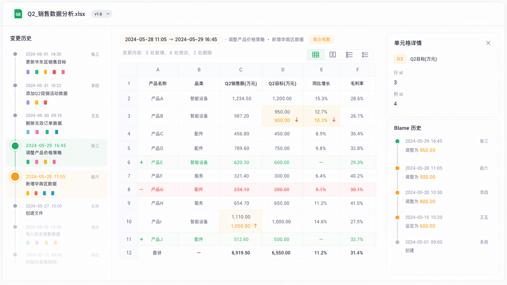
GUIDE.png：起草阶段的视觉提示，实现时按需调整GUIDE.txt 里几条被直接落成代码的规格
| 规格 | 落地 |
|---|---|
| 时间线间距 | ≤4h 取最小间距 0.2，≥3d 取最大间距 1，之间线性插值 |
| 特殊节点 | changeType 取 M|A|D|R；替换点以下线条变色，因为往下已是另一个文件的历史 |
| blame 判据 | 前一版定位不到 + 当前能 = 新增；选中版定位不到 + 前一版能 = 删除；都能但值不同 = 修改 |
| 启动方式 | LaunchMode 三态：home / svn-diff（-b %base -m %mine）/ open-file。svn-diff 拿到的两个参数都在临时目录，反推真实 URL 的过程见下一章 |
最难写的一份：合并规格
MERGE_RULES.md 单独占了 175 行，全在回答一个问题：
两组原子操作叠在一起，等于什么。
先把规格写死、再动手写代码 —— 每条分支都配一个单测，这是这个工具敢反复重构合并逻辑的前提。
三趟 pass，顺序固定
A = 较早的累计集合，B = 下一个待并入的集合。每趟结束都跑一次 cleanupCells：丢弃 old == new 的 no-op，折叠完全相同的重复项。
合并与新建的操作统一落进 B，让 A 保持「较早」、B 保持「较晚」，Cell pass 才能按 newU(A) == oldV(B) 串起来。
cur→""；加：""→cur）。这条约定把三类操作统一到了 cell 层 —— 下面几个例子几乎都靠它 + Cell pass 串接自动得出结果。
① 加行 + 改这行的格子 ＝ 直接算成新增后的值
- add 行 5001
- 展开：[5001,name] ""→"火剑"
- cell [5001,name] "火剑"→"冰剑"
- add 行 5001
- [5001,name] ""→"冰剑"
Cell pass (1.1)：newU(A)="火剑" 恰是 oldV(B)，串成 ""→"冰剑"。
界面上只看到一行绿色的新增，name 列写着「冰剑」，没有多余的黄色 modify —— 「火剑」这个中间态从未对外存在过，不该出现在结果里。
② 加列 + 填值 ＝ 同一条规则的另一面
- add 列 quality
- 展开：[1001,quality] ""→"S"
- cell [1001,quality] "S"→"A"
- add 列 quality
- [1001,quality] ""→"A"
与 ① 结构完全相同。这正是把 eventual 统一到 cell 层的回报：行与列不必各写一套前置规则。
③ 加了又删 —— 抵消
- add 行 5001
- cell [5001,name] ""→"火剑"
- delete 行 5001
- 全部移除
Row (2.2)：两条 row 操作对消，同时清掉 A 里该行的全部 cell 操作，并跳过 B 的 eventual 展开。
④ rename 接力
- rename atk→attack
- rename attack→atk_val
- rename atk→atk_val
Header (2.5)。同时所有 col=attack 的 cell 操作被改写为 col=atk_val。
⑤ 类型连改两次 —— 折叠
- type atk: int→str
- type atk: str→float
- type atk: int→float
Header (4.4)。若 A 的新类型对不上 B 的旧类型（漏选了中间版本），仍折叠，但记一条告警。
⑥ 删 Y + 把 X 改名成 Y —— 最烧脑的一条
- delete 列 quality
- cell [1001,quality] "S"→""
- rename grade→quality
- delete 列 grade
- cell [1001,quality] "S"→"A"
Header (2.4)：最终消失的是 grade，而 quality 这一列的值换成了原 grade 的内容。
A 里那条 "S"→"" 被改写成 "S"→当前值（当前值取 B 侧版本，此处为 "A"）；A 里没有对应 cell 操作的位置则新建 ""→当前值。此时跳过 eventual 展开。
⑦ cell 链式串接
- cell [1001,hp] "100"→"150"
- cell [1001,hp] "150"→"200"
- cell [1001,hp] "100"→"200"
Cell (1.1)：newU == oldV 时干净串接。
若 newU ≠ oldV（漏选了中间版本），仍串成 oldU→newV 并记一条告警。
⑧ 删行 ∩ 删列的交点
- delete 行 1001 ⇒ cell [1001,quality] "S"→""
- delete 列 quality ⇒ cell [1001,quality] "S"→""
- 折叠为一条
同属 B 的多条同格操作恒为相同的 cur→""（cur 都读 B 版本），永不冲突，只需去重。跨 A×B 的冲突交给 Cell pass。
技术选型
路径：common/tools/excel_diff_ultra/ 合并实现：main/excel/merge.ts 联系人：秦伟航
从两个临时文件反推 SVN URL
svn 把工具当外部 diff 程序调用时，只递两个 %TEMP% 下的文件路径。
拿到手的全部信息
-b C:\Users\X\AppData\Local\Temp\道具表-好感度道具.xlsx-rev2476143.svn000.tmp.xlsx
-m C:\Users\X\AppData\Local\Temp\道具表-好感度道具.xlsx-rev2476144.svn001.tmp.xlsx两个文件都在临时目录，都不受 SVN 控制。svn info 对它们无效。
而工具要画时间线、要拉历史、要做 blame，第一步就得知道这个文件在仓库里的完整 URL。
唯一的线索：TortoiseSVN 的命名约定
<原文件名>.xlsx-rev<revision|BASE>.svn<NNN>.tmp.xlsx| 形态 | 含义 | 出现场景 |
|---|---|---|
表.xlsx-revBASE.svn000.tmp.xlsx | 工作副本的 BASE 导出 | 对未提交的本地改动做 diff |
表.xlsx-rev2476144.svn001.tmp.xlsx | 某个历史 revision | 在 svn log 里双击某次提交 |
表.xlsx.svn000.tmp.xlsx无 rev 段，0 字节 | 不存在的那一侧 | add / delete 记录的 diff |
正则拆出真实文件名与 revision 号 —— 反推的全部起点就是这两样东西。
三种情形分派
svn info，附一个 virtual 节点三种都不匹配时直接报错，把收到的 base / mine 原样打出来，方便贴给我们看。
反查：把 revision 当探针
实测：svn log -v -r REV <分支根> 只在该 revision 触及该分支时返回 logentry，未触及返回空响应。
这条性质让「文件属于哪个分支」变成一次廉价的并行试探 —— 拿 revision 号去每个分支根问一句，谁答得上来就是谁。
两次 revision 求交集去歧
同一个文件必然被 baseRev 和 mineRev 两次提交同时触及。拿两次 changed-paths 的匹配结果求交集，就能滤掉同名噪音。
- /trunk/design/道具表-好感度道具.xlsx
- /trunk/tmp/道具表-好感度道具.xlsx
- /trunk/design/道具表-好感度道具.xlsx
- /trunk/design/道具表-好感度道具.xlsx
交集为空说明期间发生过 rename —— 此时回退到较新那次 revision 的匹配结果。
同名候选的内容消歧
_grey 灰度副本被同一次 commit 同时触及，交集里留下两个候选，路径都对得上。mineRev 上导出，与 mine 临时文件做 sha1 比对。TortoiseSVN 递过来的临时文件就是该 revision 的原始导出，xlsx 字节完全一致。三个坑
A加载界面永久卡死，没有任何报错
- 根因
- Electron 里 spawn 的 svn 没有 tty，遇到 auth 提示会静默无限等待，表现为进度条一直转。
- 解法
- 所有 svn 调用统一加
--non-interactive，再套一层 3 分钟超时，把静默等待转成显式错误。
B大仓库上 log 输出撑爆缓冲
- 根因
svn log -v --xml在大型仓库单次输出可超百 MB，一次性缓冲会直接 OOM。- 解法
- 流式读 stdout，分块累积，不设缓冲上限。
C中文路径匹配不上
- 根因
- URL 里是 percent 编码，log xml 里是 XML 实体，两层编码叠在一起。
- 解法
- 统一走 XML 实体解码 → percent 解码 两步，仓库根 URL 只做前缀拼接、不要求可读。
分支基点列表与仓库根都可用环境变量整体替换（EXCEL_DIFF_SVN_BASES / EXCEL_DIFF_SVN_ROOT / EXCEL_DIFF_WC_SCAN_DIRS），换项目不用改代码。
代码：main/svn.ts（resolveSvnDiff / parseTempDiffName / findFileUrl / probeBase）·测试：main/svnDiff.test.ts
原子操作与两种视图
Excel Diff Ultra —— 把 xlsx 的 SVN 历史变成可读的操作集。合并出问题时靠它定位。
入口
-b %base -m %mine，在 svn log 里双击直达7 种原子操作
| 操作 | key | 附带字段 |
|---|---|---|
header_add X | 英文表头 | 中文描述、类型 |
header_delete X | 英文表头 | 中文描述、类型 |
header_rename X→Y | 中文+类型相同、仅英文名变 | 中文描述、类型 |
header_type_change | 英文表头 | oldType、newType |
row_add / row_delete X | 行 id | — |
cell [row,col] | row × col | oldVal、newVal（只有 modify 一种） |
rename 的判定 —— 看例子
- atk｜攻击力｜int
- def｜防御力｜int
- attack｜攻击力｜int
- def｜防御力｜int
- rename atk→attack
- atk｜攻击力｜int
- attack｜攻击｜str
- rename
- delete atk
- add attack
中文描述 + 类型都相同才算 rename。中文描述单独变化不产生任何操作。
加列 / 加行会连带展开 cell
- add 列 quality
- cell [1001,quality] ""→"S"
- cell [1002,quality] ""→"A"
- cell [1003,quality] ""→"A"
删列对称展开为 cur→""。加行 / 删行同理，按行展开。
行删 ∩ 列删的交点会产生两条完全相同的 cur→""，由 cleanupCells 折叠成一条。
语义视图 与 物理视图
同一次提交，物理视图 40+ 处变更，语义视图 2 处。
差异全部来自表头被拖动了位置。
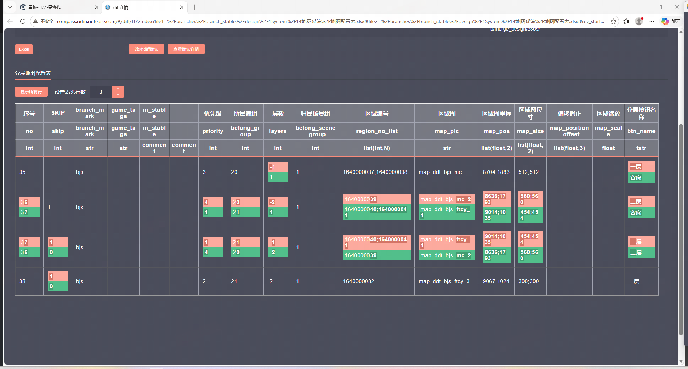
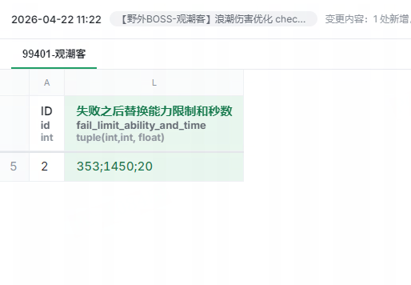
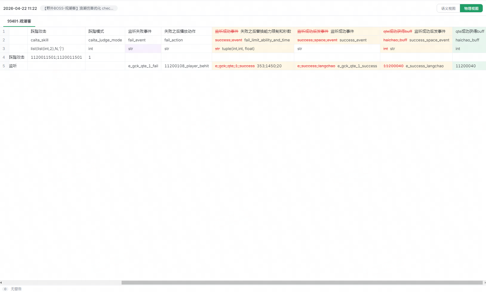
| 匹配方式 | 适用 | |
|---|---|---|
| 语义 | 行 id × 英文表头 | valid table（3/4 行表头 + 首列 id）。行列移动位置零噪音 |
| 物理 | 物理行号 × 物理列号 | 任何 xlsx 恒可用。表格结构不合法时的唯一手段 |
Tab 在两视图间切换，选中的单元格自动跟随定位；物理视图默认折叠无变更行，Alt+V 展开。
代码：shared/ops.ts（操作定义）·main/excel/extract.ts（抽取）·main/physicalDiffService.ts（物理 diff）·规则原文 docs/MERGE_RULES.md
主界面操作
左边时间线选版本，中间看 diff，右键往回追。
入口：两种打开方式
方式二在「导表工具 - Diff 工具配置」里设一次，之后 SVN 日志窗口双击文件即可直达。 两种方式都要求文件位于 SVN 工作副本内 —— 版本历史全靠它。
时间线：先选对版本
| 操作 | 效果 |
|---|---|
| 单击 | 选中单个版本 |
| Shift + 单击 | 区间选择 |
| Ctrl + 单击 | 逐个加选 —— 离散多选由此产生 |
| 右键 | 选择同一天提交 / 选择同单号提交 |
| 双击 | 跳转该提交关联的易协作单 |
- 节点间距按提交时间间隔插值：≤4h 最密，≥3d 最疏。密集提交不会挤成一坨，跨月空档也不会拉出一屏空白。
- 特殊节点：创建 / 删除 / 替换。替换点以下线条变紫 —— 往下已经是另一个文件的历史了。
- 节点右下角摘要图标：竖条=列操作、横条=行操作，绿增红删黄改，附计数。不展开也能看出这次提交动了什么。
选择同单号提交一键选中一个 ref 的全部提交 —— 这正是离散多选的主场景，详见 II-05。
看 diff：切视图，折叠噪音
在语义视图选中一个单元格再按 Tab，物理视图会自动定位到对应格子。
两个视图的坐标系完全不同（id×表头 vs 行号×列号），这条映射是专门做的。
物理视图默认只显示有变更的行、列全保留 —— 列一折叠就对不上表头了。
查上下文：拖出来，冻起来
语义视图只给出变更本身。可「这个技能的其他字段现在是什么」得另找地方看。
于是加了拖拽：按住格子往一个方向拖，浮层里列出同行 / 同列的全部单元格，还能直接敲关键词过滤。 不用切窗口，不用回 Excel。
物理视图默认冻结前三行表头（描述 / 英文 / 类型）与首列 ID。策划表动辄上百列， 横向滚到第 80 列时，不冻结就完全不知道自己在看哪一格。
blame：这一格是谁改的
| 方向 | 问题 |
|---|---|
| 向后 blame | 这个值之后被谁改掉了 |
| 向前 blame | 这个值最初由谁引入 |
| 粒度 | 什么算一次变更 |
|---|---|
| 单元格 | id + 表头都匹配才算 |
| 行 | 该 id 的任意单元格有改动就算 |
| 列 | 只认针对表头本身的操作（重命名 / 改类型） |
blame 节点可点。从「谁改的」一步走到「改成了什么样」。
教程原文：src/renderer/tutorialPages.tsx 代码：renderer/Timeline.tsx（时间线）·main/blameService.ts（blame）
离散 revision 与孤儿显示
选中 r101、r105、r109 三个不相邻的版本，要看它们合起来改了什么。
多选语义：各选中版本自身增量的并
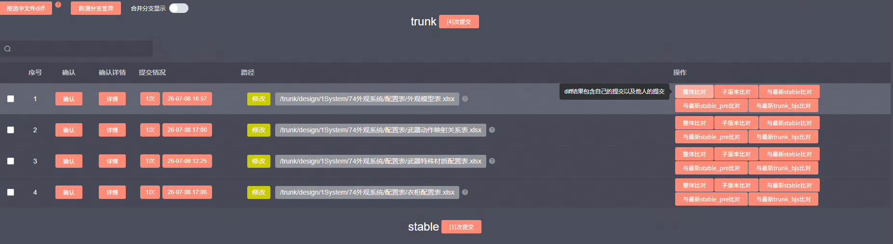
for (const rev of sorted) { // 升序遍历选中版本
const oldWb = prevRev === rev - 1 ? prevWb : await loadWb(rev - 1);
const newWb = await loadWb(rev);
pairDiff = extractSheetDiff(oldSd, newSd); // rev-1 → rev 的自身增量
acc = acc ? mergeDiffSets(acc, pairDiff, view) : pairDiff;
} // 任意时刻堆内只留 ~2 份解析结果流式折叠：解析完一对立刻释放。否则多选 N 个版本会有 2N 份解析结果同时驻留，直接 OOM。
每一对相邻版本抽出的 diff set，按时间线从早到晚依次两两合并 —— 合并规则见 II-01。
孤儿操作的显示
离散选择必然产生「操作在最新版本上找不到落点」的情况。
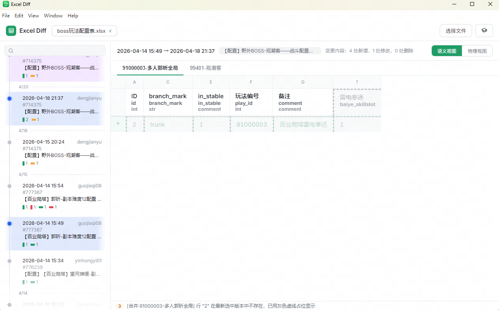
| 情况 | 显示 |
|---|---|
| 表头 / 行操作定位不到 | 在末尾补出该表头 / 行，半透明 + 虚线，仍着操作色（绿增红删黄改） |
| cell 的行列交点定位不到 | 补齐占位表头 / 行，半透明 + 虚线 + 灰色。灰色表示纯占位，不参与操作着色 |
| cell 的 newV 与最新表实际值不符 | 单元格切两半：一半正常显示最新值，一半显示 oldV→newV |
告警，然后继续
合并规则里大量分支的处置是「记一条 warning 后继续」：漏选中间版本、疑似重复表头、rename 链断裂…… 这些都源于用户的离散选择，属于预期内的输入。工具的选择是照常给出最合理的合并结果，把不确定性显式列在告警面板里。
代码：main/excel/merge.ts（mergeDiffSets / headerPass / rowPass / cellPass / cleanupCells）·main/diffViewService.ts（流式折叠 + projectOntoBase）
缓存体系
同一张表第二次打开 23.2s → 9.2s。五层缓存，四层落磁盘、跨进程存活。
前提：revision 内容不可变
给定 url@rev，字节流永远不会变。
于是从它派生的一切 —— 导出文件、剥离结果、解析结果、摘要 —— 都可以无限期缓存，不存在一致性问题。整章的每一层都由这一条授权。
registerRevisionOverride 把它标出来，
hasRevisionOverride 在每一层拦掉写缓存 —— 它只走串行解析，永远不入表。一次冷启动要付的钱
五层的 key 与失效
| 缓存 | key | 位置 | 命中省下 | 失效与上限 |
|---|---|---|---|---|
| history | sha1(url) | 磁盘 | 一次全量 svn log -v --xml，大仓库响应可达 60–190MB | svn info 探 last-changed；新版本只增量补拉 |
| export | sha1(url)/rev | 磁盘 | 一次 svn export | 内容不可变，永不失效；30 天未用清理 |
| strip | sha1(路径|大小|mtime) | 磁盘 24 内存 3 | 读原文件 + 一次注定失败的解析 + JSZip 剥离 | key 含 size+mtime，源文件一变自然失效 |
| 解析 LRU | url@rev | 内存 | 一次 exceljs 解析 | 主表 6 + grace 4；随进程结束 |
| summary | sha1(url).json | 磁盘 + 内存 | 两次导出 + 两次解析 + diff 计算 | 摘要不可变；800ms 防抖合并落盘 |
时间线上每个节点的「+3 行 / −1 行」摘要，要解析 r-1 和 r 两个版本才能算出来 ——
解析占其中 97% 的成本，diff 计算只占 3%。所以值得缓存的是摘要结果本身，而不是中间的解析。
为什么缓存之外还要排队
exceljs 解析是单线程 CPU 活。交错执行不会更快，只会让每一份都更晚完成。
队列之上的三条纪律
| 做法 | |
|---|---|
| 在途合并 | 同一 url@rev 已在解析 → 直接复用那个 promise，不重复排队 |
| 在途升级 | 预取（不入缓存）在途时用户点了同一版 → 就地升级为缓存任务，不解析两遍 |
| grace 缓存 | 预取结果进容量 4 的旁路小表；用户点到就晋升主表。不进主表是为了不把用户正在看的版本挤出去 |
保留策略：export-cache 的 10 GB
导出缓存原本只写不删。一台机器上积到 19918 个文件 / 10.1 GB。
大半不是用户打开过的版本，而是时间线预取为了算摘要顺手导出的 —— 预取半径当时是 ±10，一次滚动就是几十个 svn export。半径已收到 ±5，但存量还得有人清。
判据：不能用文件系统的 atime
见下方 case 03。结论是自己盖戳：命中时 utimes 刷新 mtime。revision 内容不可变，mtime 原本只记录「何时导出」、无人读取，可以安全征用成「最后一次用到」。
| 环节 | 处置 |
|---|---|
| 触发时机 | 启动后 60 秒。扫两万个文件的 stat 不该跟首屏解析抢 IO |
| 频率 | 每天一次，靠 .last-prune 标记文件的 mtime 限流 |
| 判据 | mtime 超过 30 天；顺手收掉因此清空的目录 |
| 并发保护 | 本次会话交出去过的路径记在 inUse 集合里，一律跳过 |
| 失败处置 | 全程 try/catch。清不掉只是占地方，绝不能影响读表 |
total : 19918 files, 10141.1 MB
expire: 17783 files, 7375.1 MB ← 首次清理释放
keep : 2135 files, 2766.0 MB首次清理有个先天缺陷：存量文件从没被「盖过戳」，只能拿导出日期当代理，可能误删一个上周才看过、但 2 月导出的版本。
代价是一次 svn export（数百毫秒），第二轮起时间戳就准了。误删成本低，策略就可以激进。
实测
| 场景 | 优化前 | 优化后 | 来源 |
|---|---|---|---|
| 再次打开同一文件的首个 diff | 23.2s | 9.2s | 54.5 万格，远程仓库 |
| 首个 diff 视图构建 | 19.4s | 11.5s | 300 万格 / 5.2MB |
| 历史加载（177 节点） | 11486ms | 348ms | last-changed 探测命中 |
| fallback 剥离解析 | 4159ms | 2318ms | strip-cache 磁盘命中 |
| 摘要复用已解析版本 | 2204ms / 版 | 0 | 见 case 01 |
| userData 磁盘占用 | 10.1 GB | 2.7 GB | 30 天保留策略 |
四个 case
01摘要把主缓存里现成的版本又解析了一遍
- 症状
- 日志里
r7681941先报「workbook 命中」，六行之后又出现「摘要解析 r7681941（不入缓存）」，耗时 2204ms。同一个进程、同一个版本，内存里明明有。 - 根因
- 查表整体被包在
if (wantCache)里。摘要路径传cache:false，于是主表和 grace 两张表都不查，直接排队重解析。cache:false的本意是「别污染 LRU」，却被写成了「别用缓存」。 - 解法
- 把查表和副作用拆开。命中一律复用；
wantCache只决定要不要刷新 LRU 次序、要不要把 grace 晋升主表 —— 预取不该扰动用户正在看的那几版。
// revision 内容不可变 → 已解析结果一律复用，与是否入缓存无关
const hit = wantCache ? lruGet(cache, key) : cache.get(key);
if (hit) return hit; // 差别只在「要不要动 LRU 次序」02剥离缓存把 5.2MB 的表写成 61.5MB
- 症状
- 加完磁盘缓存后去
%APPDATA%看了一眼，单个条目 61.5MB。按当时 40 个的上限，光这一层就能占 2.4GB；内存 LRU(3) 还常驻 184MB。 - 根因
- JSZip 的
generateAsync({type:"nodebuffer"})默认是 STORE，不压缩。xlsx 本身就是 DEFLATE 过的 zip，剥离后重新打包等于把整包 XML 摊平了写回去。 - 解法
- 显式指定压缩，上限 40 → 24。剥离本来就只发生一次，那一次的压缩成本完全可以忽略。
return await zip.generateAsync({
type: "nodebuffer",
compression: "DEFLATE", // 默认 STORE，必须显式指定
compressionOptions: { level: 3 }, // 只在剥离时付一次
});03拿文件系统 atime 当「最后一次用到」不可行
- 症状
- 要给 export-cache 加保留策略，第一反应是读 atime —— 操作系统已经在记「最后访问时间」了，何必自己造。
- 根因
- NTFS 的 atime 不可信。本机查出来是
DisableLastAccess = 2（更新开启），可实际值全是坏的：
| 文件 | mtime（导出时间） | atime |
|---|---|---|
| 1287747-衣柜配置表.xlsx | 02-19 14:27 | 08-06 19:33 |
| 1292671-衣柜配置表.xlsx | 02-22 16:33 | 08-06 19:33 |
| 1308106-衣柜配置表.xlsx | 03-02 18:00 | 08-06 19:33 |
| 1308268-衣柜配置表.xlsx | 03-02 19:06 | 08-06 19:33 |
前后跨了半个月导出的文件，atime 全是同一个值 —— 某次杀软 / 备份 / 索引器整树扫了一遍，把所有 atime 一次性抹平。 任何批量读文件的程序都会毁掉这个信号；何况 NTFS 的 atime 写入还有最长 1 小时延迟，各台机器的注册表默认值也不一致。
- 解法
- 自己盖戳：命中时
utimes刷 mtime。只有我们自己写的时间戳，语义才由我们说了算。
04损坏的缓存条目没有退路
- 隐患
- 尚未在线上出现，是加完磁盘缓存后复查代码时发现的：半截写入或磁盘错误产生的 strip-cache 条目，会让这份表永远打不开 —— 每次读都取到同一个坏 buffer，exceljs 抛错直接冒泡给调用方。比没有缓存更糟。
- 根因
- 写入侧做了「临时文件 + rename」防半截，读取侧却无条件信任读回的字节。防御做了一半。
- 解法
- 装载缓存 buffer 的那次 load 单独 try/catch：失败即删条目（内存 + 磁盘），回退到读原文件重新剥离。回归测试直接塞一个非 zip 的 buffer 进去，断言仍能读出正确数据、且坏条目被删除。
代码：main/historyCache.ts（lastChanged 探测）·main/exportCache.ts（utimes 续期 + pruneExportCache）·main/stripCache.ts（两级剥离缓存）·main/workbookCache.ts（LRU + grace + 两级队列）·main/summaryCache.ts（摘要持久化）
历史日志：150MB 换几个角标
上一章用缓存把 11.5s 的历史加载藏了起来，但没让它变快。去掉一个 -v 参数：传输量 150.30MB → 0.64MB。
被缓存挡住的那根柱子
图 6-1 最左边那根是 svn log -v：11.5s。上一章给它加了 history-cache，于是它只在首次出现 —— 然后就没人再看它了。
但「首次」不是罕见情况。用户打开一张没看过的表时付的正是这个价，而这恰恰是最常见的入口。 缓存把问题移出了视线，没有移出代价。
history 上（diff effect 开头就是 if (!history) return），
而文件打开的 effect 要等 getHistory 回来才设默认选中版本。
这 11.5s 完全是串行的，期间界面上什么都没有。-v 到底买到了什么
-v 会给每一个 revision 附上那次提交的全部 changed paths。
一次触及三千个文件的提交就要传三千行 —— 而我们只关心其中一个文件。
| 这些字节的去向 | 用途 |
|---|---|
<paths> | 唯一的消费者是 resolveChangeType |
changeType | 时间线圆点上的 A / D / R 角标；R（replace）之后的连线变色 |
| 其余 | 没有了。 |
diff 本身根本不看节点列表：基线版本是 rev - 1 直接算出来的，svn export url@rev-1 在任意版本都成立。
节点列表只服务于时间线渲染、blame 的版本区间，以及「跳过了中间版本」的告警。
一个被实测否决的方案
最先想到的是分阶段拉取：先只拉选中版本和它的前一版，把 diff 画出来；再拉 ±5 个节点补摘要；最后后台拉全量。时间线未到货的部分先置灰。
思路没错，首屏确实能快。但动手前先量了一轮，读数把它否了。
| 命令 | svn 耗时 | 传输 | 节点 | |
|---|---|---|---|---|
| A | log -v --xml 全量（原实现） | 2758ms | 150.30 MB | 2858 |
| B | log --xml 全量，去掉 -v | 261ms | 0.64 MB | 2858 |
| C | log -v --limit 2 阶段 1 | 124ms | ~4 KB | 2 |
| D | log -v --limit 11 阶段 2 | 125ms | 12 KB | 11 |
| E | log -v -r R:1 --limit 2 锚定任意版本 | 146ms | ~4 KB | 2 |
同一个文件，2858 个 revision，局域网。
| 读数 | 推论 |
|---|---|
| C ≈ D（124 / 125ms） | 成本在往返，不在条数。阶段 1 和阶段 2 一样贵 → 它们本该是一次调用 |
| B = 261ms，节点全 | 不分阶段也能拿到完整列表，只比阶段 1 多 137ms —— 分阶段的全部复杂度，只换这 137ms |
半截列表的三处暗礁
如果当时真按分阶段做了，下面三处会静悄悄地错，而且都不会报错：
| 位置 | 会发生什么 |
|---|---|
| blame 版本区间 | blame 拿全部节点的 revision 去溯源。半截列表会让它只扫已拉到的那几版，追不到真正的改动者 |
| 创建点标记 | 时间线把「最老的一条」画成文件创建点。列表半截时，最老的已加载节点会被画上一个假的创建标记 |
| 跳版告警 | 「你跳过了中间 N 个版本」要靠完整列表算，半截时漏报 |
三处都得靠一个 partial 标志逐个绕开，而且每一处错得都很安静。省下的 137ms 买不起这些。
降级安全吗
去掉 -v 后 <paths> 不再返回，解析代码一行没改，自然降级。
| 原行为 | 现行为 |
|---|---|
resolveChangeType 扫 <path> | 扫不到 → 一律返回 { type: "M", matched: false } |
| 最老一条的创建点修正 | matched=false 正是它原本的触发条件 → 最老一条仍标 A |
| A / D / R 角标 | 丢失：除创建点外全是 M，R 之后的连线不再变色 |
最老一条标 A 是对的：全量查询会追随 copy 链一直回到文件历史的起点，那一条本来就是创建点。
分支探测用的 logMatches 保留 -v —— 它是真要读 changed paths 才能在分支间定位文件，而且只查单个 revision，很便宜。
结果
| 场景 | 优化前 | 优化后 | 倍数 |
|---|---|---|---|
| 全量历史（2858 节点，局域网） | 2758ms | 261ms | 10.6× |
| 传输量 | 150.30 MB | 0.64 MB | 235× |
| 首次打开（远程仓库，预估） | 23.2s | ~12.5s | 历史 11.5s → <1s |
改动本身是五处调用各删掉一个 -v。
代码：main/svn.ts —— getFileHistory / getFileHistoryByUrl 的五处 svn log（全量 · 增量 · peg 回退）、parseLogXml、resolveChangeType、logMatches
Mth Diff：技能图的两种视图
.mth 技能节点图也是文本，但可读的单位不是「行」，是「原子」。
原子：图 → 节点 → 轨道 → 关键帧
语义视图把整张技能图按世代分列铺开：图 → 节点 → 轨道 → 关键帧。
每个原子一个身份键，版本间按身份对齐 —— 文本行号完全不参与。
| 显示 | 含义 |
|---|---|
| 绿 | 新增的原子 |
| 红 | 删除的原子 |
| 橙 | 属性被修改 |
| 虚线弱化 | 幽灵态：改动的落点在最新选中版本上已不存在（被中间未选版本删掉），同 II-05 的孤儿显示 |
语义视图 与 物理视图
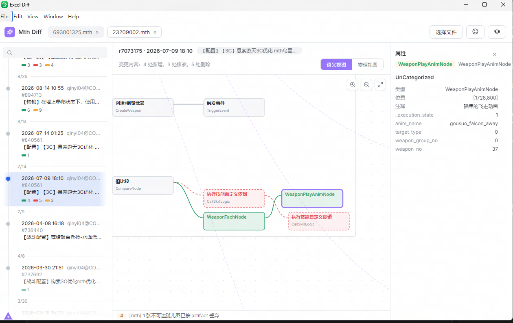
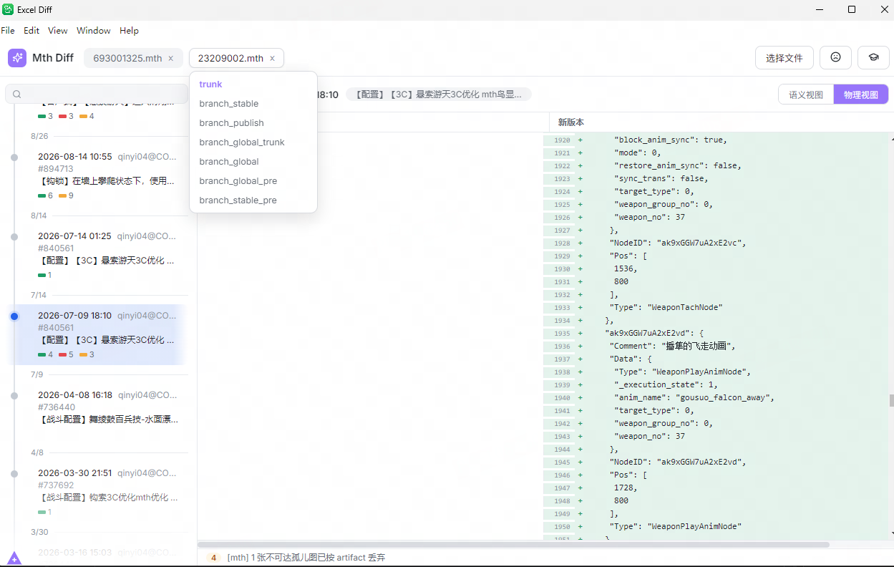
| 匹配方式 | 适用 | |
|---|---|---|
| 语义 | 原子身份键（graph / node / track / frame） | 默认视图。节点挪位置、文本行序变化零噪音 |
| 物理 | mth 文本行 | 想核对原文逐行改动时的对照视图 |
Tab 在两视图间切换：语义中选中的原子，物理视图滚动居中并闪烁； 物理视图里浏览到的文本位置切回语义，画布也自动聚焦对应原子。双向定位都是专门做的。
画布操作
| 操作 | 效果 |
|---|---|
| 拖拽空白 / 滚轮 | 平移 / 以指针为锚缩放；右上角按钮：放大、缩小、适应窗口 |
| 单击 原子 | 右侧属性面板展示全部属性，变更字段高亮；面板与物理视图可互相跳转定位 |
| 右键 轮盘 | 上一处 / 下一处变更：按文本序循环聚焦，命中原子发光提示 |
代码：renderer/MthDiffPanel.tsx（语义画布 + 轮盘）·renderer/MthPhysicalPanel.tsx（物理对照 + Tab 双向定位）·renderer/mthLayout.ts（世代布局）·shared/mthOps.ts（原子操作）
Mth Diff：搜索与 blame
技能图动辄上百个节点。先找到它，再追到是谁改的。
搜索：Ctrl+F
- Ctrl+F 呼出搜索，再按一次收起。
- 结果列表点击即聚焦：相机居中 + 发光脉冲 —— 不用自己在画布上找。
blame：这个原子是谁改的
| 方向 | 问题 |
|---|---|
| 向后 blame | 这个原子之后被谁改掉了 |
| 向前 blame | 这个原子最初由谁引入 |
blame 覆盖原子的子代：节点含其时间线 / 轨道 / 关键帧，关键帧含其引用图与图内节点。 结果按版本分组，列出各原子的新增 / 删除 / 属性变更。
代码：main/blameService.ts（mth blame）·renderer/MthDiffPanel.tsx（搜索 + 轮盘）